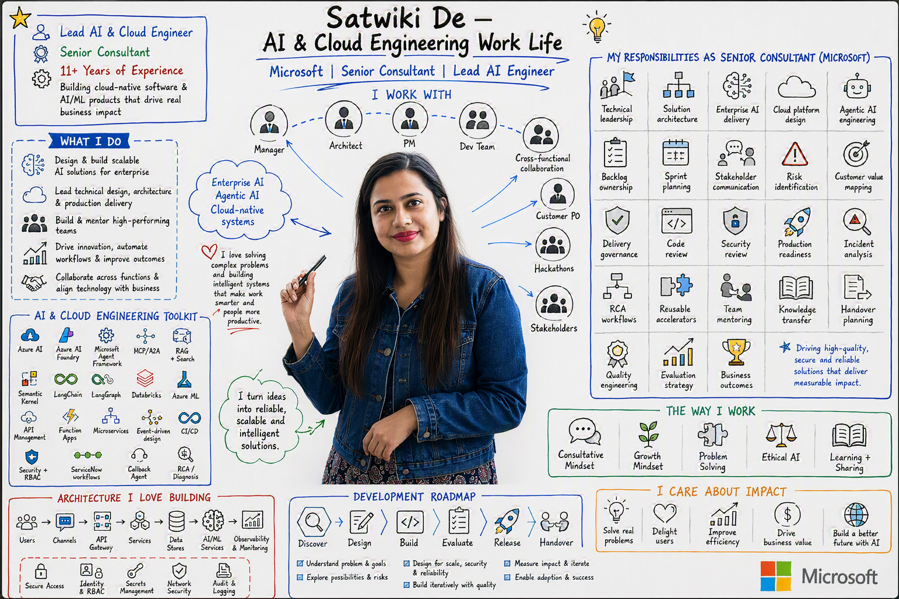

Multi-agent Orchestration · September, 2026
Building Text-to-SQL Agentic AI for Enterprise Analytical Workflows
How to put Agentic AI into enterprise analytical workflows effectively.
I turn ambitious ideas into production-ready systems, connecting Business Strategy + AI + backend engineering + cloud architecture. I enjoy owning the journey from the first whiteboard sketch → launch , and helping teams build with confidence .
I'm a Technical Lead and Senior AI Engineer building and owning agentic AI systems, cloud-native backend platforms and enterprise RAG architectures that hold up under real production load — not just in a prototype, but at 120K+ active enterprise users, serving high throughput. I've designed multi-agent orchestration platforms, API and event-driven systems, connected 5 heterogeneous data sources into working RAG pipelines, and scaled AI infrastructure throughput 200% in 4 months.
The cloud architecture, scaling and orchestration patterns matter more to me than tech stack or LLMs.
What I care most about is the unglamorous engineering underneath the AI headline: reliability, latency, throughput, databases, observability, data ingestion pipelines, model routing, evaluation metrics, security measures, enforcing responsible AI - all that decides whether a system actually works in production or just looks good in a screenshot.
Most recently I've led a cross-functional team of 7 to build intelligent automation workflow. I own the architecture, spec-driven design workflows, run design, backlog and security reviews, setting engineering standards with AI assisted engineering and reviews, and drive launches to Production, including direct stakeholder management.
Beyond building AI systems, I'm always evolving how I build with AI. I use tools like GitHub Copilot daily inside a research-plan-action-review framework. At scale, this also means treating token usage and context budget as engineering constraints — designing workflows for the team that stay efficient as codebases and teams grow. I think of this as constraint-bound, AI-native development: using AI to move faster while adhering to review discipline and architectural intent for a maintainable system.
If you're solving problems like these or want to chat about AI-native workflows, let's talk.

Tap or click to view full size (opens in a new tab)Passionate to build, Innovate to Sustain, Inspire to Lead.
 Hyderabad, India
Hyderabad, India
[ Previous roles: Consultant I & II ]
1. Led & Owned Agentic AI engagements execution and production rollout for Microsoft's enterprise customers, resulting into AI-augmented operational efficiency, reduced knowledge search time on private data, enhanced user experience with AI augmented workflows and tools and contributing ACR generation for Microsoft.
2. Led a cross-functional team of 7 in an engagement contributing into ~$150k/month in platform revenue for Microsoft, owning the solution from design through production release.
3. Improved engineering standards by adopting spec-driven development using Github Copilot, reducing initial design and backlog creation time by ~45%. Standardized AI-driven implementation workflow, code review and quality standards that reduced functional bugs by ~80%.
4. Led a complex agentic AI engagement over 6 months, aligning 3+ stakeholder groups through evolving scope and 5+ prototype iterations. Extended beyond core AI engineering to evolve into an unique Hybrid data science approach.
5. Presented tech session on how LLMs are used to optimize business decusion at Microsoft Tech Connect 2026 (Seattle) to 200+ attendees.
USI · Hyderabad, India
[ Previous roles: Analyst ]
1. Delivered 2 large-scale production releases as part of cross-team efforts spanning multiple Deloitte teams, working through the full release lifecycle from planning to deployment.
2. Led a team to own an internal product and ran a bi-weekly production release cadence for ~8 months, ensuring consistent, on-schedule releases. Collaborated with product owners, architects and business users to propose and build new features and maintaining the product.
3. Contributed across 6+ enterprise products supporting customer onboarding and business performance metrics.
How to put Agentic AI into enterprise analytical workflows effectively.
Exploring how to implement structured development workflows using GitHub Speckit for efficient and maintainable AI-native development.